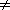

ORTEP-III Online Documentation
ORTEP-III Online Documentation
This page provides some general information on using ORTEP-III, and it describes how some aspects of the program work to assist users who wish to modify the program's operation.
ORTEP-III provides a "language" that is used to write a "program" (the ORTEP input file) that describes the crystal structure illustration to be produced. The suggested approach for creating a new structure illustration is to select an organic, inorganic, macromolecule, or critical-net example illustration that is of the type desired and then to study and modify that example's input file. Most users specialize in certain types of structures that can be derived from a small set of template ORTEP examples. Users often eventually write a helper program to produce the ORTEP input files for that family of illustrations. Minerologists, organic chemists, inorganic chemists, macromolecule biologists, and solid state physicists all have different traditions and publication requirements for crystal structure illustrations.
Before executing ORTEP-III, an input file must be created that contains the information ORTEP uses. Originally, the input to ORTEP was a set of punched cards. Now, the ORTEP input is a computer text file containing lines of information corresponding to the cards. However, since the input must be very precisely formatted as required by the Fortran code, it is still convenient to refer to the individual lines of input as cards, and that practice is maintained throughout this documentation.
For those who may be unfamiliar with Fortran input, two points are in order. First, when a card field is specified to contain a particular item of input, the input should be entered in the rightmost positions of the field. Secondly, the value of 0 is assigned to a numeric input item whose card field is left blank.
NOTE: In some Fortran systems, such as the SPARCompiler Fortran from Sunsoft, it is possible to use comma-separated fields for numeric data input in place of the fixed-column format. This will work with ORTEP (without source modification) if zeroes are used instead of blank entries in all numeric fields.
Comments may be placed with the instruction portion of the input file. In previous versions of ORTEP, Format No. 3 trailer cards were the only method for doing this. This method still works in ORTEP-III, but a new method also exists. Among the ORTEP instructions, any line beginning with # is treated as a comment and is totally ignored by the program. Such comments can only go in the instruction portion of the input data and only at places where a new instruction could begin, i.e., comments can not go between instructions and their trailer (continuation) cards. CAUTION: These comment lines are not printed in the ORTEP output file, and they are lost if the input file is edited with ORTEP-III's internal line editor.
Click here to read about the contents and format of the input file. A detailed example of an input file is provided for cubane. Examples of input files may be downloaded by clicking here.
ORTEP-III is a semi-interactive program that requests certain control information from the user while the program executes. When ORTEP starts up, the user is asked to supply three basic items of information. A default value for each item is provided in square brackets, and it will be used if the user simply hits the RETURN key (on some keyboards, the name of this key is ENTER).
Enter instruction set file name or "exit" [TEP.IN]: Drawing to (1) Screen, (2) Postscript file, (3) HPGL file, or (0) Omit [1]: Text output to (1) File, (2) Screen, or (0) Omit [0]:The first of these is the name of the ORTEP input file. The default name is TEP.IN. The user may supply a file name or may enter "exit" or "EXIT" to stop program execution. Care must be taken when entering a file name to match the case of the letters on those systems that distinguish upper and lower case.
The second item requested is the destination of the ORTEP drawing. The default here is the screen. The alternatives of a Postscript file or HPGL/2 (Hewlett Packard Graphics Language) file are chosen if the user enters a "2" or "3", respectively. A choice of "2" or "3" causes ORTEP to ask about the orientation of the drawing.
(1) Portrait or (2) Landscape orientation [1]:One further piece of information is needed for a Postscript landscape drawing.
How tall is printer page in inches? [11.00]:If the destination of the ORTEP illustration is a file, the file will be named TEPnnn.PRN where nnn is a number starting with the value 001. The program sets the value so old illustration files are not overwritten. Once the file name is determined by the program, the name is displayed on the screen. If a different naming convention is preferred, the code for naming the files is in subroutines INITPS and INITHP.
The third main user inquiry is the destination of ORTEP's text output. The default value here is to omit the output. An entry of "2" displays the output on the screen. If a "1" is entered to save the output in a file, the user is asked to supply a file name.
Enter output file name [DEFAULT]:The default name is derived from the name of the input file by adding or substituting the extension "out". A different file name may be typed in. If the name chosen here is the same as an existing file, the file will be overwritten. Displaying ORTEP's text output on the screen is not an option in the compiled DOS version of ORTEP-III.
Before the program exits, the user is given another opportunity to save the drawing or view it on the screen. In addition, an option to use ORTEP's internal editor is provided.
(1) Save drawing as Postscript file (2) Save drawing as HPGL file (3) Redraw structure on screen (4) Edit instruction set [Quit]:The wording of the user requests and the code that handles the user input are in subroutine UINPUT. The default values are set in subroutine DFLTS and held in COMMON DFL.
The screen drawing subroutines available in ORTEP-III use PGPLOT. PGPLOT is a free graphics library developed by T. J. Pearson at the California Institute of Technology. The package is written in Fortran and operates on a variety of platforms. Information about PGPLOT can be found on the World Wide Web at http://astro.caltech.edu/~tjp/pgplot or via e-mail to tjp@astro.caltech.edu.
PGPLOT creates a window
on the screen that represents an 8 1/2  11
inch drawing surface in landscape orientation on which ORTEP
draws its illustration.
After viewing the illustration,
the user must click in the EXIT box with the mouse and hit RETURN
to go back to the user input dialog. If the mouse does not operate,
two RETURNs should work.
11
inch drawing surface in landscape orientation on which ORTEP
draws its illustration.
After viewing the illustration,
the user must click in the EXIT box with the mouse and hit RETURN
to go back to the user input dialog. If the mouse does not operate,
two RETURNs should work.
Users can interact with the illustration to identify atoms displayed on the screen. This is done by positioning the cursor (with a mouse or with the keyboard's arrow keys) on a displayed atom and clicking the mouse button or typing the letter "a". The atom's label (if it has one) and atom designator code are displayed. Whether or not a mouse will work is a function of how PGPLOT operates on the particular platform. The cursor must be positioned within 1/16 inch of the atom center. If ORTEP identifies two or more atom centers within 1/16 inch of the cursor, it will provide the identification of the atom closest to the cursor position, but question marks will also be displayed. Caution should be exercised when atoms lie directly over or very near each other.
The destination of the ORTEP illustration is determined by the value of NDRAW that is set from user input in subroutine UINPUT and subsequently held in COMMON NS. The pre-defined values for NDRAW that have been built into ORTEP-III are listed below. Caution must be exercised if the illustration destination code is altered. If a new destination is desired, it is probably a good idea to create a new value for NDRAW that is different from those already programmed.
| NDRAW = 0: | no illustration |
| NDRAW = 1: | screen output |
| NDRAW = 2: | Postscript file output |
| NDRAW = 3: | HPGL file output |
| NDRAW = 9: | RESERVED for future use |
Seven subroutines control the plotting of illustrations produced by ORTEP III--F200, PLOT, INITxx, COLRxx, PENxx, PENWxx, and ENDxx [xx refers to a specific plotting device (see below)]. These may be modified to produce the output required to plot the illustrations on a variety of devices.
Subroutine F200 responds to 200 series instructions in the ORTEP input file. A 201 instruction produces a call to INITxx, which contains the specific initialization code for device xx. Similarly, a 202 instruction with no parameters (i.e., blanks or "0"s) produces a call to ENDxx, which contains the device's termination code. When a 202 instruction with one or two non-zero parameters is received by F200, it interprets the parameters as the x- and y-shift, respectively, in the plotting origin. These values are stored in the variables XTRANS and YTRANS, respectively, that are held in COMMON TRFAC. (These variables are both initially set to "0" when the 201 is received.) The 204 instruction produces a call to COLRxx to change the color of subsequent plotting. PENWxx is called to change the thickness of the plotted lines in response to a 205 instruction. For compatibility with OR TEP-II, the 203 instruction is treated the same as a 201.
The illustration is actually produced when ORTEP makes calls to subroutine PLOT with the arguments X, Y, and IPEN. X and Y are the x,y position (in inches) where the plotting device's pen should move, and IPEN is a flag that specifies whether the pen should be down (producing a line, IPEN=2) or up (not producing a line, IPEN=3) as it moves to its new position. These values are sent to PENxx, which contains the specific code for device xx to handle the pen movements. The values of XTRANS and YTRANS are added to X and Y, respectively, in PENxx.
Two functional plotting "devices" are included in the ORTEP-III distribution. These don't actually control physical devices but instead create files containing Encapsulated Postscript (EPS) and HPGL/2 descriptions of the illustrations. These files may be downloaded to printers/plotters that accept those particular page description languages. ORTEP-III itself does not automatically download (or spool) the files for printing/plotting. Some computer graphics programs and word processors will import these files. Click here to see the Postscript specific code in subroutines INITPS, COLRPS, PENPS, PENWPS, and ENDPS. Similarly, the HPGL specific subroutines INITHP, COLRHP, PENHP, PENWHP, and ENDHP may be viewed by clicking here.
Since every user will not have PGPLOT, the five subroutines that control screen drawing--INITSC, COLRSC, PENSC, PENWSC, and ENDSC--are not functional in the ORTEP-III source code distribution, i.e., they are "dummy" subroutines containing only the single Fortran instruction RETURN, as seen by clicking here. However, on systems that have PGPLOT implemented, alternate code for these five subroutines is available in the distribution and should be substituted for the dummy versions. INITSC creates the window in which the ORTEP illustration is drawn. The size and orientation of the window can be changed by modifying the code in INITSC.
The PGPLOT screen driver code includes a subroutine named CURSSC that has no counterpart in the Postscript and HPGL drivers. This code allows users to identify atoms displayed on the screen.
ORTEP-III provides a simple line editor for editing the input file without exiting the program. Note: Comments in the input file beginning with # will not be displayed and will not be retained if the instruction set is saved. The editor can not be used to create comments beginning with #.
When the editor is invoked, the instruction set from the input file is displayed on the screen with line numbers along with the editor commands.
C=Change line # D=Delete line(s) # [#] I=Insert line before # T=Type line(s) [#] [#] S=Save modified instruction set O=Restore original instruction set P=Save drawing as Postscript H=Save drawing as HPGL R=Redraw structure on screen Q=Quit(The symbol # in the editor commands above stands for a line number. Brackets [] mean optional.)
All commands are entered as a single letter (upper or lower case) followed by 0, 1, or 2 integers, representing line numbers, separated by spaces.
The "Q" command exits the editor and terminates ORTEP.
The "C" command requires the number of the line to be changed. The line is displayed, and changes are typed on the line directly under it. Use the space bar and backspace key to position the cursor where changes are to be made and type the changes. Only non-space characters will be substituted into the original line. To substitute a space into the original line where a non-space character exists, type the @ character at that position. The substitutions are made when the RETURN key is pressed.
Similarly, the "I" command requires one line number. A blank line is provided and the user types in its contents, ending with a RETURN.
The "D" command requires the number of at least one line to delete. If two are entered, a block of lines is deleted.
With no line numbers, the "T" command types the entire instruction set on the screen. It types a single line or a block of lines if one or two line numbers, respectively, are entered.
After editing the instruction set, it may be saved in a new file with the "S" command. The user is asked to provide the name of a file that does not already exist.
If it is determined that editing has taken things too far afield, the original input instruction set may be restored with the "O" command.
The "R", "P", and "H" commands draw the ORTEP illustration on the screen, in a Postscript file, and in an HPGL file, respectively. As a safety precaution, these three commands save a copy of the current instruction set in a file named TEP.NEW before their respective actions are executed.
The editor may NOT be used to insert comments beginning with # into the input file.
The code that controls the editor is in subroutine EDITR.
ORTEP-III provides a way to input atom parameters that are available in a "nonstandard" format. If the sentinel value (column 1) on the last symmetry card in the ORTEP input file is "2" instead of "1", the program asks the user for the name of a file containing the atom parameters and branches to subroutine READIN to read the information. This subroutine may be modified and the program recompiled to read any desired format.
Subroutine READIN has 16 parameters as described below. Upon entry, only IU, the input file unit number, has been set by the calling routine. All other parameters must be set in READIN before control is returned to the calling routine. The READIN subroutine distributed with ORTEP-III may be used to read small protein fragments (500 atoms or less) in the Brookhaven Protein Data Bank format.
subroutine readin(iu,chem,id1,id2,x1,x2,x3,it,is,b1,b2,b3,b4,b5,b6,btype)
| chem | 6-character atom label |
| id1,id2 | feature #1, #2 |
| x1,x2,x3 | atom x,y,z position |
| it | positional parameter type |
| is | end-of-atoms flag ("1" for last atom, "0" for rest) |
| b1,b2,b3,b4,b5,b6 | atom thermal parameters |
| btype | thermal parameter type |
In earlier versions of ORTEP, atoms could be referenced only by their numeric positions in the input file. Thus, atom number runs (ANR) were used to select groups of atoms to be treated in the same manner. ORTEP-III allows two optional attributes called features to be provided with each atom, and feature number runs (FNR) can be used to select groups of atoms having particular features. Features should prove especially useful for polymeric materials such as proteins or nucleic acids as will be seen in the examples below.
The two atom features are stored in the INTEGER*2 variables IDENT(1,n) and IDENT(2,n) where n is the atom number in the input list. The first of these contains Feature #1 of the atom and the second contains Feature #2. These can be assigned values as appropriate to the required task.
For typical ORTEP input, features can be entered in columns 10-18 and 19-27 on Type 0, 1, and 2 atom positional parameter cards. The values (or zeroes) in these fields are read in and stored in temporary real variables. They are also truncated to integers and stored in IDENT(1,n) and IDENT(2,n), respectively. If these fields happen to contain numeric values unrelated to feature definition, they will be ignored and will not interfere in any way with the operation of the program. However, if commands are invoked that specifically look at feature values, ORTEP will assume these numbers represent features of the atoms.
To illustrate this new concept, suppose a crystal contains four elements but the user wishes to plot only the atoms of one element, say sulfur. If all the sulfur atoms are grouped together in the input file, a single ANR would select them. If the sulfur atoms do not occur together in the input file, several ANRs would be needed to select all of them. In either case, the user would have to count the atoms in the input file to determine the starting and ending position numbers of the sulfur atoms. On the other hand, if the atomic number of each atom is recorded as Feature #1 in the input list, a single FNR to find all atoms with the value 16 for Feature #1 would select all sulfur atoms regardless of their positions in the input list.
The most common use for features will probably be with macromolecules. For example, in a protein, a feature field can be a convenient place to store a residue number or a code representing a structural feature of an amino acid. Atom parameters for these large molecules are likely to be read into ORTEP with the subroutine READIN. In this case, code can be written in READIN that sets the values of IDENT(1,n) and IDENT(2,n) directly. Another place where features can be useful is in critical net illustrations where it is advantageous to distinguish the peak, pass, pale, and pit critical points.
To handle features, a new parameter, number run type, has been added to the 100 series, 400 series, 505, 506, 700 series, 800 series, and 1001 instructions. See the documentation on these instructions for the details.
Example: A protein contains 60 amino acids with a total of 500 atoms.
Feature #1 of each atom has the sequence number of the amino acid
containing the atom. Feature #2 has codes for the structural
characteristics of the atom: 1 for an
 -carbon, 2 for a carbonyl carbon of
the peptide link, 3 for a nitrogen in the peptide link, 4 for all other
atoms.
-carbon, 2 for a carbonyl carbon of
the peptide link, 3 for a nitrogen in the peptide link, 4 for all other
atoms.
2 402 155501 500 1 500 2.0
9 17 9 17 1
2 402 155501 500 1 500 2.0
1 3 1 3 2
1 402 155501 500 1 500 2.0
2 1
2 9 17 9 17 1
1 3 1 3 2
1 712
1 500
1 712
1 3 2
1 712
9 17 1
2 1001 1
9 17 9 17 1 0.9 2.0 .04
2 812 1
9 17 9 17 1 0.9 2.0 .04
ORTEP-III can produce "critical net" illustrations that depict
some canonical topological characteristics of the global ensemble of
overlapping atomic-thermal-motion Gaussian density functions in a
crystal. Only non-degenerate critical points are considered here since
a degenerate critical point can always be distorted into a set of
non-degenerate ones.
In addition, we have so far not found a true degenerate critical point
in a valid crystal structure and postulate that all crystal structures
are Morse (Marston Morse)
functions (i.e., they have no degenerate critical points).
Non-degenerate critical points occur where the
first derivative of the global density is zero and the second
derivative is a 3
3 symmetric matrix with non-zero determinant. The
signs of the three eigenvalues of the second derivative matrix specify
the types of critical points, which we term peak (-,-,-), pass
(+,-,-), pale (+,+,-) and pit (+,+,+).
In the immediate vicinity of the critical point, the quadric surfaces of equidensity associated with a Taylor series expansion about a peak, pass, pale, and pit are the imaginary ellipsoid, hyperboloid of two sheets, hyperboloid of one sheet, and real ellipsoid, respectively, for density higher than that at the critical point. For density lower than that at the critical point, this series of quadric surfaces is reversed. At the critical point density, the equidensity quadric surfaces are point, elliptic cone, elliptic cone, and point, respectively. However, ad hoc ellipsoidal graphical representations are substituted for graphical simplicity and compatibility with ORTEP.
Below is the critical net illustration for NaCl with the larger corner spheres representing Cl peaks; the smaller corner spheres, Na peaks; the cigar-shaped ellipsoids, passes; the pancake-shaped ellipsoids, pales; and the smallest sphere in the center, a pit. The reason for this choice is that the four types of critical points represent 0 (e.g., vertex), 1 (e.g., edge), 2 (e.g., face), and 3 (e.g., body) dimensional cells in the topological Morse function CW complex (i.e., C for closure finite, W for weak topology), hereafter simply called a critical net, and correspond with the number of + signs in the sign signature for each critical point. The most gradual up-density path from a pit to a peak follows the sequence pit -> pale -> pass -> peak, and these paths shown by the connection "bonds" in the figure are topologically unique.
The input file used to produce the NaCl illustration demonstrates how a critical net drawing is programmed. New in ORTEP-III is the method for specifying the orientations and sizes of the pass (cigar-shaped) and pale (pancake-shaped) ellipsoids without giving their quadratic form coefficients. The temperature factor card following the atom positional parameter card for a pass or pale has the format given below.
| Columns | |
|---|---|
| 1 | A sentinel  0 if last atom |
| 2-9 | Unique axis length (Å) |
| 10-18 | Second (and third) axis length (Å) |
| 19-27 | VDC1 (from) |
| 28-36 | VDC1 (to) |
| 37-45 | (optional) VDC2 (from) |
| 46-54 | (optional) VDC2 (to) |
| 63 | 7 |
VDC1 is a vector parallel with the unique
axis of the cigar-shaped pass or pancake-shaped pale and VDC2
is a second vector not parallel with
VDC1 such that VDC1
VDC2 is a second
principal axis of that ellipsoid. If VDC1
and VDC2 are parallel, VDC2 is
replaced by a suitable lattice translation
vector. VDC2 may be omitted from the input
if desired, and the program will choose one of the three lattice
vectors for VDC2.
Click here for more information on critical nets.
 Online Documentation
Table of Contents
ORTEP-III Home Page
Online Documentation
Table of Contents
ORTEP-III Home Page
Page last revised: July 10, 1997